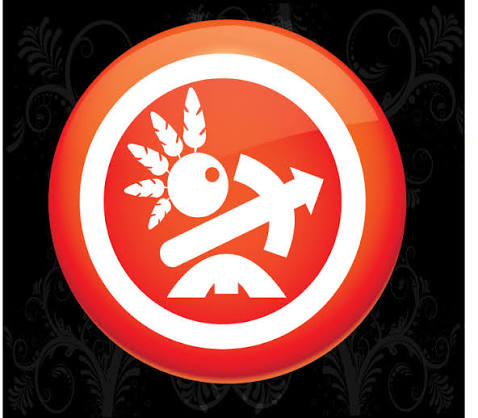

Início / Guia de marca
A mesma tribo, mais afiada.
Proposta de evolução: preservamos o emblema (cocar, ferramenta-flecha e oca dentro do selo vermelho) e refinamos execução, cor, tipografia e uso.
1 · O que mudou no emblema
 Proposta
Proposta

AtualPreservamos
- Selo circular vermelho-alaranjado com anel branco
- Cocar de penas, a figura e a ferramenta-flecha
- A oca na base, que ancora a composição
- Traço branco e leitura imediata, mesmo pequeno
Refinamos
- Removemos o efeito de vidro e brilho (datado e pesado de reproduzir)
- Redesenho 100% vetorial, nítido em qualquer tamanho
- Penas, flecha e oca com proporções e espaçamentos regulares
- Fundo floral preto substituído por fundos limpos e versáteis
2 · Assinatura
Sobre fundo escuro
Sobre fundo claro
Só texto, sobre a cor da marca
Ícone isolado (avatar, favicon, carimbo)
Tribo da Arte
Cenografia · Esculturas · Adereços
Tribo da Arte
Cenografia · Esculturas · Adereços
Tribo da Arte
Do rascunho à realidade
3 · Paleta
Cores de terra e fogo.
Urucum#E8461E
Cor primária, herdada do selo original
Cor primária, herdada do selo original
Carvão#0B0908
Fundo principal
Fundo principal
Areia#F3ECE2
Textos e seções claras
Textos e seções claras
Ouro#E5B567
Filetes e detalhes premium
Filetes e detalhes premium
Brasa#FF7A3D
Destaques e hover
Destaques e hover
Argila#8F3318
Terracota profundo
Terracota profundo
Combinações testadas: texto Areia sobre Carvão e Carvão sobre Urucum têm contraste confortável para leitura. Evite texto branco pequeno sobre Urucum; use Carvão.
4 · Tipografia
Aa
Fraunces
Títulos e destaques. Serifada com personalidade orgânica, quase artesanal. Use as versões leve e itálica para ênfase.
Aa
Manrope
Textos, menus e rótulos. Sem serifa, limpa e legível em tela e impressão.
5 · Aplicações
Avatar de redes sociais
Cartão de visita
Tribo da Arte
Cenografia · Esculturas · Adereços
(11) 97670-1636
gnomus.cenografia@gmail.com
Post no Instagram
Do rascunho à realidade, na prática.
@tribo.da_arteBoas práticas
- Mantenha área livre ao redor do emblema (mínimo de 1/4 da largura)
- Use o selo vermelho sobre fundos escuros ou claros neutros
- Tamanho mínimo do emblema: 24 px em tela, 12 mm impresso
Evite
- Esticar, girar ou recolorir o emblema
- Reaplicar o efeito de brilho/vidro
- Colocar o emblema sobre fotos muito cheias sem fundo de apoio